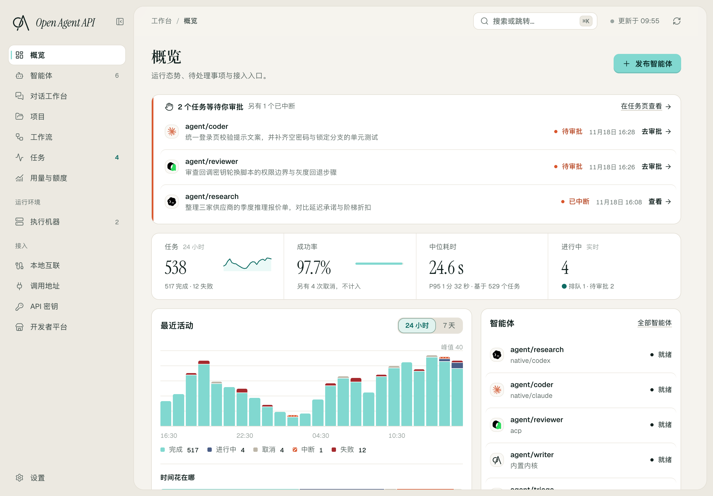
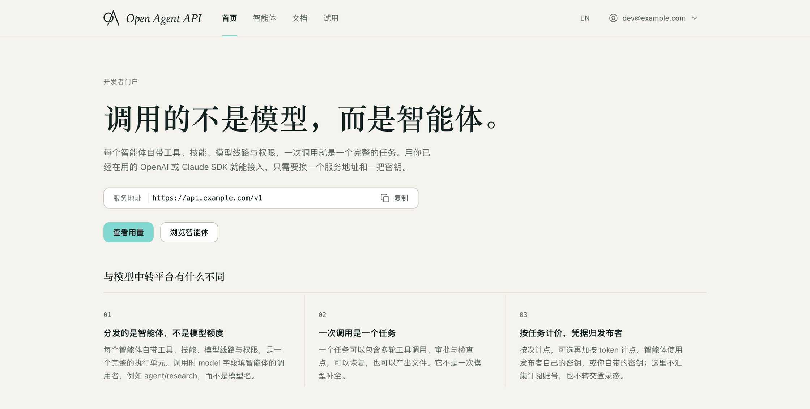

开源 · 自托管 · Apache-2.0
把智能体变成 API。
调用的不是模型，而是自带工具、技能与权限的智能体：一次调用，就是一个任务。兼容 OpenAI、Claude、Gemini 三家协议与官方 SDK，调用方只需要 Base URL 和 API Key。

改一行
改一行 Base URL，应用就多了一个会干活的智能体
同一段 OpenAI SDK 代码，只改 base_url 与
model 两处，就从调用模型变成了调用智能体。
from openai import OpenAI client = OpenAI( base_url="https://api.openai.com/v1", api_key=OPENAI_API_KEY, base_url="http://127.0.0.1:8787/v1", # 你的网关 api_key="sk-oaa-…", # 控制台创建的密钥) resp = client.chat.completions.create( model="<某个模型>", model="agent/research", # 智能体的调用名 messages=[{"role": "user", "content": "整理这三份报价单"}],)print(resp.choices[0].message.content)import OpenAI from 'openai'; const client = new OpenAI({ baseURL: 'https://api.openai.com/v1', apiKey: process.env.OPENAI_API_KEY, baseURL: 'http://127.0.0.1:8787/v1', // 你的网关 apiKey: process.env.OAA_API_KEY, // 控制台创建的密钥}); const resp = await client.chat.completions.create({ model: '<某个模型>', model: 'agent/research', // 智能体的调用名 messages: [{ role: 'user', content: '整理这三份报价单' }],});console.log(resp.choices[0].message.content);调用方只需要三样东西
服务地址（Base URL）、API Key、模型名。在控制台创建密钥后，结果页把三样都列出来，各自可以一键复制。
model
填的是智能体的调用名，不是底层模型的名字；背后用哪个模型，由发布者在发布智能体时声明。

它是什么
不是又一个模型中转站
01
智能体，不是模型
分发的是自带工具、技能、模型线路与权限的完整执行单元。一次调用是一个任务：多轮工具循环，有产物，可恢复。不做订阅池，也不中转登录态。
02
三家协议，原样兼容
OpenAI Chat 与 Responses、Claude Messages、Gemini generateContent。官方 SDK 只要换服务地址和密钥；OpenAI 与 Anthropic 的 SDK 有常驻回归测试，Gemini 的 SDK 做过一次实测。
03
人在回路
需要批准的操作会让任务停在「待审批」，你批准后同一个任务接着做。可以取消、可以恢复、可以幂等，每个任务的时间线与步骤都能查。

接入
接入的智能体与协议
内置智能体与本机已安装的外部智能体都可以发布成 API。能力差异在交互深度，不在能不能接入。
智能体
- 内置智能体OAA-Lang 或 JSON 定义；支持审批与调用方工具桥接
- Codex支持审批；不支持调用方工具桥接
- Claude Code支持审批；按消息流式输出
- Antigravity不支持审批；目前唯一做过真实验证的外部智能体
- ACP 智能体支持审批与调用方工具桥接
- 自写适配器oaa/1 的 stdio、流式与 HTTP 三种形式
- A2A 远程智能体不桥接审批，经 contextId 续接同一任务
协议
- OpenAI Chat官方 openai SDK 有常驻回归测试，流式与非流式
- OpenAI Responses同上，支持 previous_response_id 续接
- Claude Messages官方 @anthropic-ai/sdk 有常驻回归测试
- GeminigenerateContent；官方 @google/genai 做过一次性实测
- oaa/1 原生协议POST /v1/invoke
- MCP 入口发现并调用智能体；刻意不提供批准审批的工具
流式、审批、取消、续接、用量在每种接入方式下的完整对照，见文档 接入外部智能体。外部智能体的权限是继承的，网关不对它做沙箱隔离。
开发者平台
也可以做成开发者平台
在控制台点一下「启用」，开发者就能自助注册，在门户里创建自己的密钥，按任务计点调用你上架的智能体。
- 自助注册与密钥：开发者自己创建、自己删除，彼此的数据互相隔离。
- 按任务计点：每个任务一个价格，也可以再加按 token 的价格。
- 点数只是记账单位：没有真实的支付渠道，也不发邮件。
- 默认关闭：不启用时这些功能都不存在。

现状
现状与边界
做过什么、没做什么，如实写在这里。
已经做到
- 741 项 node:test 测试，包含 OpenAI 与 Anthropic 官方 SDK 的回归测试。
- Antigravity 的一次真实验证，共 12 次调用：OpenAI Chat 非流式与流式、Responses 续接、Claude Messages、Gemini generateContent、取消、并发。
- Gemini 官方 SDK 的一次性实测。
- 审批、中断与恢复、幂等、任务检查器，以及可一键启用的开发者平台。
尚未做到
- Codex、Claude Code、内置智能体搭配真实模型提供方：还没有做端到端验证。
- 公网部署：还没有在真实公网环境里验证。
- 真实的支付渠道：没有，点数不接支付。
- 开发者平台是单网关加 SQLite，不支持多实例。
- macOS 安装包：没有公开发布，自己打的包未经公证。
测试用的是本地确定性模型与夹具，不能证明真实提供方的兼容性与性能。完整的说明见 README 的「现状与边界」。